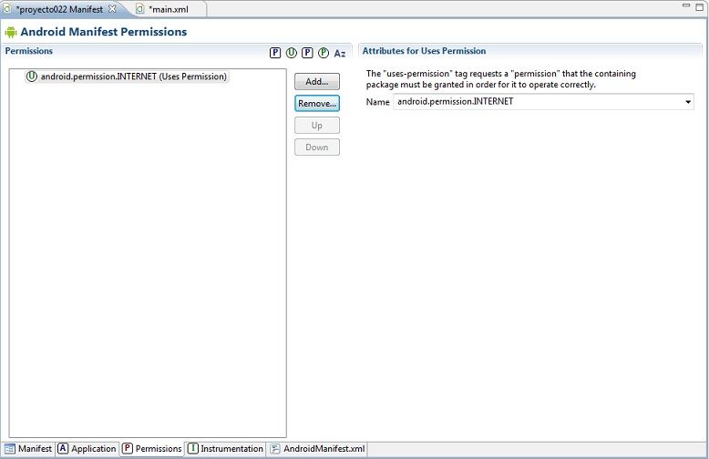

Ahora vamos a ver los pasos para reproducir un archivo almacenado en un servidor de internet.
Problema:
Disponer un botón con la etiqueta: "Gato", luego cuando se presione reproducir el archivo de audio respectivo. El archivo de sonido se encuentra almacenado en http://www.codigofuenteya.com.ar/recursos/gato.mp3
El primer paso es modificar el archivo AndroidManifest.xml donde autorizamos a la aplicación a acceder a recursos localizados en internet:
Creamos la interfaz de la aplicación e inicializamos el evento On click del Button con el método que implementaremos:

El código fuente es:
package com.androidya.proyecto022;
import java.io.IOException;
import android.app.Activity;
import android.media.MediaPlayer;
import android.os.Bundle;
import android.view.Menu;
import android.view.View;
public class MainActivity extends Activity {
@Override
protected void onCreate(Bundle savedInstanceState) {
super.onCreate(savedInstanceState);
setContentView(R.layout.activity_main);
}
@Override
public boolean onCreateOptionsMenu(Menu menu) {
// Inflate the menu; this adds items to the action bar if it is present.
getMenuInflater().inflate(R.menu.activity_main, menu);
return true;
}
public void ejecutar(View v) {
MediaPlayer mp = new MediaPlayer();
try {
mp.setDataSource("http://www.codigofuenteya.com.ar/recursos/gato.mp3");
mp.prepare();
mp.start();
} catch (IOException e) {
}
}
}
Para recuperar un archivo mp3 de internet procedemos de la siguiente manera, primero creamos un objeto de la clase MediaPlayer:
MediaPlayer mp=new MediaPlayer();
Luego llamamos al método setDataSource indicando la dirección de internet donde se almacena el archivo mp3:
mp.setDataSource("http://www.codigofuenteya.com.ar/recursos/gato.mp3");
Llamamos al método prepare y seguidamente llamamos a start:
mp.prepare();
mp.start();
Todo esto lo hacemos en un bloque try/catch para capturar excepciones de tipo IOException.
Esta primera aproximación para ejecutar un mp3 localizado en internet bloquea la aplicación hasta que se carga por completo el archivo, es decir queda ejecutándose el método mp.prepare() hasta que finaliza la recuperación en forma completa.
Este proyecto lo puede descargar en un zip desde este enlace:
proyecto022.zip
Problema:
Confeccionar otra aplicación similar a la anterior pero que no se congele la interfaz de la aplicación mientras se carga el mp3. Mostrar un mensaje que el archivo se está cargando.
Desarrollamos un nuevo proyecto, asignamos el permiso de acceder a internet en el archivo AndroidManifest.xmp y creamos una interfaz similar al problema anterior.
El código fuente es:
package com.androidya.proyecto023;
import java.io.IOException;
import android.app.Activity;
import android.media.MediaPlayer;
import android.media.MediaPlayer.OnPreparedListener;
import android.os.Bundle;
import android.view.Menu;
import android.view.View;
import android.widget.Toast;
public class MainActivity extends Activity implements OnPreparedListener{
MediaPlayer mp;
@Override
protected void onCreate(Bundle savedInstanceState) {
super.onCreate(savedInstanceState);
setContentView(R.layout.activity_main);
}
@Override
public boolean onCreateOptionsMenu(Menu menu) {
// Inflate the menu; this adds items to the action bar if it is present.
getMenuInflater().inflate(R.menu.activity_main, menu);
return true;
}
public void ejecutar(View v) {
mp = new MediaPlayer();
mp.setOnPreparedListener(this);
try {
mp.setDataSource("http://www.codigofuenteya.com.ar/recursos/gato.mp3");
mp.prepareAsync();
} catch (IOException e) {
}
Toast t = Toast.makeText(this,
"Espere un momento mientras se carga el mp3",
Toast.LENGTH_SHORT);
t.show();
}
public void onPrepared(MediaPlayer mp) {
mp.start();
}
}
Para poder capturar el evento que el archivo se terminó de recuperar debemos implementar la interface OnPreparedListener:
public class Proyecto023Activity extends Activity implements OnPreparedListener {
Con esto decimos que nuestra clase implementará el método onPrepared donde iniciamos la ejecución del mp3:
public void onPrepared(MediaPlayer mp) {
mp.start();
}
En el evento click del botón creamos el objeto de la clase MediaPlayer, le pasamos al método setOnPreparedListener la dirección del objeto que capturará el evento de que el recurso está completo. Luego llamamos a los métodos setDataSource y prepareAsync para inicializar la carga del mp3. Finalmente mostramos un mensaje para informar al usuario que el archivo se está descargando:
public void ejecutar(View v) {
mp=new MediaPlayer();
mp.setOnPreparedListener(this);
try {
mp.setDataSource("http://www.codigofuenteya.com.ar/recursos/gato.mp3");
mp.prepareAsync();
}catch(IOException e) {
}
Toast t=Toast.makeText(this,"Espere un momento mientras se carga el mp3", Toast.LENGTH_SHORT);
t.show();
}
Este proyecto lo puede descargar en un zip desde este enlace:
proyecto023.zip